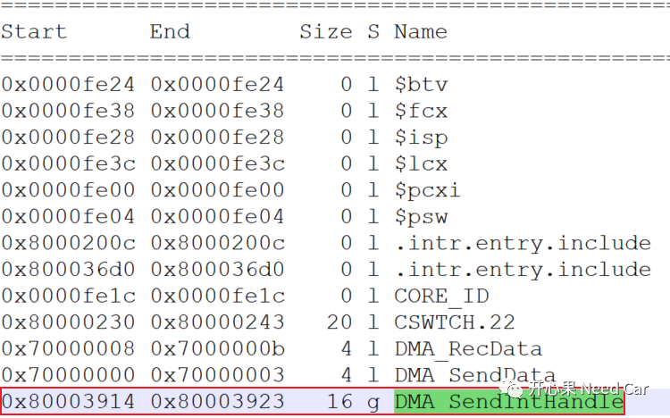
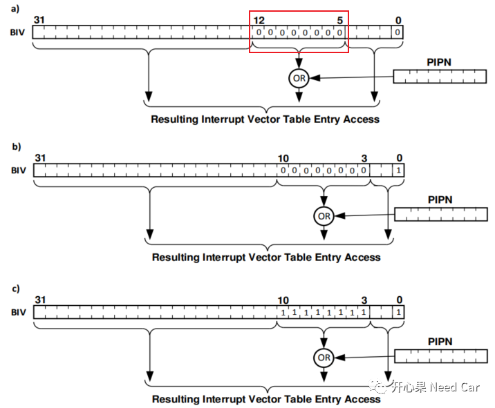
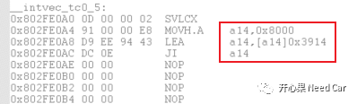
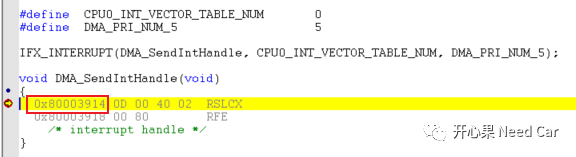
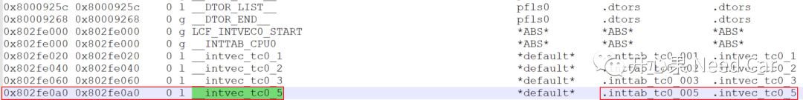
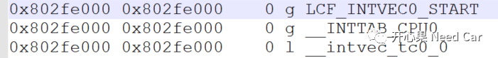
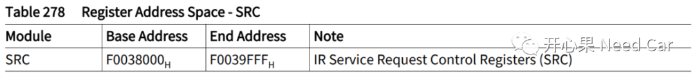
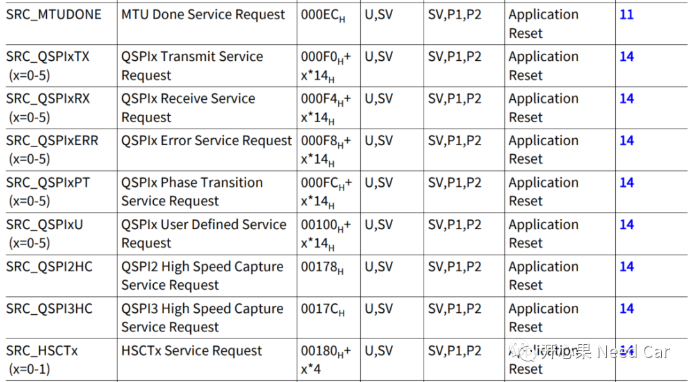
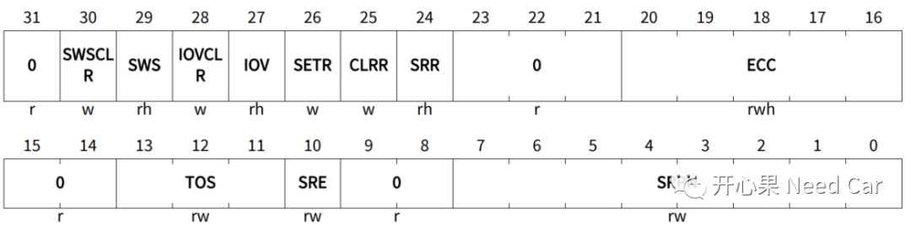
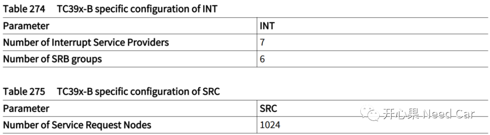

开心果 Need Car · 2022-01-29T07:22:00+08:00 · 微信原文
嵌入式开发中，中断有多重要无需我过多赘述，如果开发工程师仅停留在配置层面去理解中断，似乎有些“飘”了（对，说的就是我自己），使用配置工具配置是省事，但是很多时候我们就是一知半解，排查bug的时候才感觉到心有余而力不足。来，本文撕一下tc397中断。
前面简单地说过，每个CPU是通过其对应的中断向量表基地址和中断向量号找到中断处理函数入口地址的，可以回顾英飞凌tc397:告诉你程序真正的启动过程。本文做进一步解释，我们写的中断函数是如何被CPU找到的。
本文写一个DMA中断处理函数，讲解其被CPU0找到的过程：
首先，我们写一个中断处理函数DMA_SendIntHandle，该处理函数由CPU0处理，设置中断优先级为5。tc397有6个核，这里只讲解CPU0中断处理过程，其它核或者DMA处理类似。
IFX_INTERRUPT(DMA_SendIntHandle, CPU0_INT_VECTOR_TABLE_NUM, DMA_PRI_NUM_5);void DMA_SendIntHandle(void){/* interrupt handle */}
一般来说，我们都会使用类似IFX_INTERRUPT（这样的宏去声明一个中断函数，这个宏因编译器不同而展开形式不同，一般会放在编译器头文件中，比如：CompilerTasking.h。这里传入三个参数：中断函数名称、中断向量表号、中断优先级。
中断函数名称：自定义，见名知意即可。
中断向量表号：一般来说，对应的芯片有几个核就有几个中断向量表，比如tc397有6个核，即可设置6个中断向量表，在链接文件中设定好每个中断向量表的基地址。
中断优先级：也称为中断向量号，因为在某一时刻，可能多个中断节点向同一个CPU/DMA发出中断请求，CPU/DMA按照优先级去处理不同节点的中断服务请求。对于DMA来说，中断向量号从0开始，对于tc397，DMA的中断优先级可以设置为0~127（因为有128个DMA通道，通道号越大，优先级越高）；对于CPU来说，中断向量号范围可以设置为1~255，0是无效的中断优先级，也是中断向量号越大，优先级越高。
其次，中断函数在编译的时候会分配一个函数入口地址，如下所示：DMA_SendIntHandle分配的地址为：0x80003914。那么中断发生的时候，CPU怎么跳到0x80003914处呢？

实际CPU0要根据中断向量表基地址和中断号，找到对应的指令地址和执行跳转指令，才能跳到DMA_SendIntHandle函数入口位置。继续回忆一下，前面我们聊过，每个CPU的中断向量表基地址都会在链接文件中设定好，并且在程序启动的时候设置给每个CPU的BIV寄存器。
CPU通过BIV知道了自己对应的中断向量表基地址，节点请求中断时，将自己的中断向量号PIPN发送给中断处理者（CPU/DMA），此时CPU就可以通过中断向量号偏移，偏移过程如下所示（本文使用方式a）,本文设置了DMA_SendIntHandle优先级为5，（5 << 5） + BIV存储基地址（链接文件中设置） = 0xA0 + 0x802FE000 = 0x802FE0A0。即中断发生时，CPU0会跳转到0x802FE0A0地址处，取指令和执行指令，一般在此位置执行的指令就是一个跳转指令，即跳转到DMA_SendIntHandle函数处。




再说细一点，对于CPU0，设置的中断向量表基地址为0x802FE000：
中断优先级为1时，获取的32byte空间起始地址：
0x802FE000+32 = 0x802FE020，在此地址处开始执行指令（跳转指令），即跳转到用户中断函数
中断优先级为2时，获取的32byte空间起始地址：
0x802FE000+64 = 0x802FE040
中断优先级为3时，获取的32byte空间起始地址：
0x802FE000+96 = 0x802FE060
...
DMA可以设置中断优先级0:
中断优先级为0时，获取的32byte空间起始地址：
0x802FE000
...
中断优先级0也是该中断向量表的基地址，如下所示。





往期精彩回顾